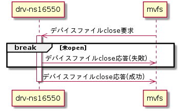
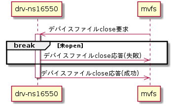

デバイスファイルclose要求処理機能
mvfsからのデバイスファイルclose要求に対し、応答を返す。シーケンスを以下に示す。
シーケンス図


デバイスファイルclose要求受付
デバイスファイルclose要求では以下に示すパラメータを受け取る。
デバイスファイルclose要求パラメータ
| # | パラメータ名 | 意味 |
| 1 | グローバルFD | デバイスファイルopen要求時に受け付けた要求識別番号 |
デバイスファイルが未openの場合は処理結果を失敗として応答する（デバイスファイルclose応答参照）。
デバイスファイルclose応答
デバイスファイルclose応答は、mvfsライブラリのLibMvfsSendVfsCloseResp()を用いて行う。設定パラメータを以下に示す。
LibMvfsSendVfsCloseResp()設定パラメータ
| # | 引数名 | 設定値 | |
| 成功時 | 失敗時 | ||
| 1 | globalFd | 要求時のグローバルFD | |
| 2 | result | LIBMVFS_RET_SUCCESS | LIBMVFS_RET_FAILURE |
| 3 | *pErrNo | エラー要因格納先ポインタ | |